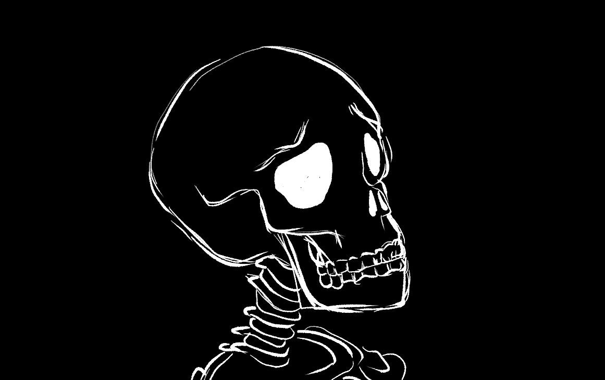

January 25th, 2024
Working with a team of a couple talented people, I have successfully completed my first game jam! We created a simple rhythm game called "Croakcore", about a band of frogs who compete in a battle of the bands competition. The game's itch.io page can be viewed here <-
December 15th, 2023
Since graduating in October, I have struggled to find projects that I am passionate about. There are many reasons for this, but in rectifying this problem I have set myself a goal of becoming more comfortable with the Godot game engine and hope to find my footing as a programmer working on games.